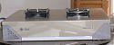
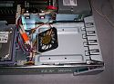
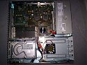
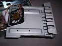

-
Refroidir une SUN SparcStation 5
Introduction
Heureux propriétaire d’une SparcStation 5, station SUN de milieu de gamme sortie en 1994 et version « light » de la SparcStation 20, j’ai rapidement été confronté à un problème de surchauffe, notamment des 2 disques durs SCSI que peut embarquer la machine.
En effet, au format SCA80, les disques sont empilés l’un sur l’autre dans un coin de la station plutôt isolée du système de ventilation classique.

Après avoir fait quelques recherches sur le net, je n’ai trouvé aucune solution qui me convienne, l’un de mes critères principaux étant que je ne souhaitais pas modifier la machine de manière irréversible.Solution
Il s’agit d’un simple ventilateur fixé à un plateau métallique prévu pour prendre la place du lecteur de CD-ROM.
- Avantages : Aucune modification de la station
- Réalisation simple avec quelques outils
- Aspect esthétique conservé (on peut faire plus propre que moi)
- Refroidissement efficace
- Inconvénients :
- Supprime l’utilisation du CD-ROM
- Une source de bruit supplémentaire
Réalisation
La plaque métallique utilisée provient d’une station HP et servait à occuper un emplacement 5“1/4. Celle-ci m’a permis de gagner du temps, car elle était pratiquement aux bonnes dimensions, mais l’on peut réaliser ce bricolage dans une plaque métallique quelconque, à condition qu’elle puisse être facile à scier et surtout qu’elle ne casse pas si on la tord (la mienne est en acier, ce n‘était vraiment pas l’idéal de ce côté-là).

Le support en lui-même fait 178 mm de long pour 147 mm de large, et le repli de la grille lui donne une hauteur de 40 mm. La partie pliée où est fixé le ventilateur a été réalisée dans un étau (j’ai fait avec les moyens du bord) après avoir pratiqué 2 entailles de 20 mm à la scie à métaux. Elle possède un angle relativement important, qui dépend des dimensions du ventilateur.

Concernant celui-ci, il provient d’un ventirad de Pentium III, et mesure 60×60 mm. Il a l’avantage d‘être relativement silencieux, mais assez puissant pour assurer un flux d’air important. Il est vissé solidement à la plaque (après avoir réalisé les trous nécessaires). Pour l’alimenter, j’ai utilisé un adaptateur que j’ai branché sur l’alimentation du lecteur de CD-ROM.Attention : ne surtout pas créer de contacts entre le fil noir et le fil rouge au moment d’adapter les connectiques. J’utilise pour cela une méthode très simple : 2 soudures propres, chacune entourée de ruban adhésif, et le tout de nouveau rassemblé avec ce même ruban. On voit sur le fil la partie avec du ruban adhésif qui protège mes soudures.
La station une fois le travail terminé. Plutôt discret, et je pense qu’on peut faire bien plus beau. N’hésitez pas à me contacter pour m’envoyer vos réalisations.
Grand merci à Zeta pour son aide ;)
par Cédric TESSIER le 05/07/2006
- Avantages : Aucune modification de la station
{kind=link}
{kind=link}
{kind=link}
{kind=link}
{kind=link}